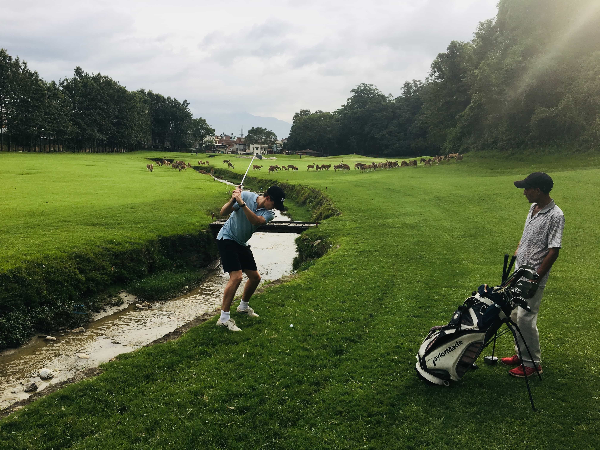

2018
NEPAL LUSTRUM REIS
Pokhara scooteren

Na vele avonturen beleefd te hebben kwamen de koeien in Pokhara. Dit prachtige stadje aan een meer had veel te bieden, van cocktail bars tot strandhutjes. Het programma voorzag de keuze om te gaan paragliden in de ochtend.
Echter waren er menig Koeien die hier geen zin in hadden en besloten zelf de dag in te richten door lekker een beetje te scooteren en een rondje om het meer te maken. En zo gingen June, Tinus, Piet en Pop op zoek naar scooters waarmee ze de dag zouden doorbrengen
Na het lang en tevergeefs zoeken, lukte het de mannen om bij een lugubere kleding zaak de scooters te huren. De man van de kledingzaak vroeg de jongens of ze allemaal hun rijbewijs hadden, waarbij Piet uiteraard NIET zijn rijbewijs had. De man vertelde vervolgens dat de boete, voor het niet hebben van een rijbewijs, wel 1600 rupees was ( oftewel 13 euro). Dat konden onze welvarende studenten wel lijden, en zo begonnen de mannen met twee scooters aan het avontuur.
Piet kondigde al meteen aan dat hij al “vaker” op de scooter van zijn zus had gereden en dus prima de bestuurder kon zijn. Na vier seconden op de scooter te hebben gezeten, wist Pop al dat dit niet het geval was en dat hij zichzelf in gevaar had gebracht. De vier begonnen te touren over de wegen en kwamen prachtige rijstvelden, koeien en uitzichten tegen. Helaas werd al snel de luxe geasfalteerde weg vervangen door de onverharde, oneven, vol met stenen en modder besmeurde wegen. Niets vermoedend gingen de jongens door. Achteraf valt er natuurlijk te zeggen dat de eerste red flags hadden moeten komen toen ze een rijstveld moesten oversteken. Voor mensen die dit nog nooit gedaan hebben, vrijwel onmogelijk.
Toen ze, na het oversteken van het rijstveld, aan een local vroegen of een rondje om het meer wel mogelijk was om zo weer terug bij Pokhara te komen, zei de local dat het niet echt verstandig was en dat ze maar beter terug konden keren. Dus de mannen besloten uiteraard om toch een rondje om het meer te maken en vooral niet naar de local te luisteren. Wat vervolgens volgde was een avontuur die ze niet meer zullen vergeten. Door jungle, paden, watervallen en rijstvelden crossen. Deze weg was zo verlaten dat vrijwel nul locals te bekennen waren.

Na drie uur rijden kwamen ze eindelijk bij een verlaten vissers cafeetje aan, waar ze even stopte om te rusten en te genieten van een cola van 30 cent. De eigenaar van het cafeetje was een oude man in de zeventig, die helemaal in zijn eentje in een godvergeten deel van Nepal woonden. De jongens hadden het met de arme man te doen… totdat de man glimlachend de jongens naar zijn achtertuin begeleidde, waar hij zijn enorme persoonlijke wiet plantage toonde. Toen begrepen ze dat deze glimlachende opa hen de hele tijd zo high als een garnaal aan het serveren was en wel de beste tijd van zijn leven moest hebben. Vooral toen hij zijn pangelese heling methodes toepaste en Piet zijn been ging masseren, toen Piet zojuist bijna met de scooter in de afgerond was gereden en een rots had geraakt.
De mannen gingen, na het gedag zeggen van Ganja opa, weer op pad. Uren gingen voorbij en het leek geen einde te krijgen. Hadden ze misschien toch moeten luisteren naar de locals bij de rijstvelden? Het begon al donker te worden en de jongens waren uitgeput van de scooters over modder, stenen, bomen en beekjes te tillen. Toen ze de Nepalese equivalent van een eenhoorn zagen wisten ze niet of dat wel een goed of een slecht teken moest zijn. Gelukkig raadden Tinus en June, tot wel drie keer toe, de juiste afslag en wisten ze op een prachtig uitzicht van Pokhara uit te komen. Na uren te hebben gecrossed, hadden de mannen het scooter rijden op alle terreinen en verkeren gemeesterd. Crossend door het verkeer van Pokhara, werd er nog met Pop op volle toeren geflirt door een achterop zittende nepalese vrouw, die Pop voor een welvarende pangel had genomen(Hoe zou dat nou komen?). Al met al zal niemand van de rest ooit kunnen toegeven dat, ook al zijn zij gaan paragliden, deze vier de aller gaafste Nepal ervaring voor altijd zullen koesteren.
Monniken & voetbal

Als je te horen krijgt dat je op vakantie gaat naar Nepal, komen de boeddhistische kriebels meteen al naar boven. Tijdens de lustrum reis zijn we dus uiteraard een tempel gaan bezoeken, waar we vervolgens mochten blijven overnachten.
Als westerling kom je in Nepal aan vol met vooroordelen en verwachtingen, dat het allemaal super rustige mensen zijn en alleen maar bezig zijn met de spiritualiteit. De nieuwste Iphone zou je bij een monnik niet snel vinden, denk je.
Om de ervaring compleet te maken mochten we in kamers van monniken slapen. In het klooster hadden de jongste monniken lege, twee bij twee kamers en hadden de oudere mannen mooie appartementen met meubilair. Mooi om te zien dus, dat anciënniteit in alle geuren en kleuren voorkomt en je het sjaarzen leven, waar ook ter wereld, niet ontsnapt.
Na een mis te hebben gevolgd wat meer op een oorlog voorbereiding leek en waar Achie in een intensieve meditatie sessie op allerlei inzichten was gekomen, gingen we naar de eetzaal om te eten. Je verwacht natuurlijk ,als echte cultuursnuiver, een overheerlijke authentieke Nepalese maaltijd voorgeschoteld te krijgen, als je dan vervolgens een pasta met ketchup als saus krijgt, dan begin je er toch aan te twijfelen of je niet na het eten ge-iced zal worden door avatar Aang of dat Karma een cornetto op je hoofd zet.
De reis was tijdens het voetbal WK en de dag dat we daar waren, was de dag van de finale tussen Frankrijk en Kroatië. De monniken hadden ons uitgenodigd om de wedstrijd te komen kijken op een beamer. Voor ons was dit een mirakel. We waren namelijk al bang dat er geen mogelijkheid zou zijn geweest om de wedstrijd te zien.
Nadat er veel door Piet aan de beamer, encoder en speakers was gekloot en inmiddels alle jongerejaars van het klooster zich hadden verzameld in de grote tuin begon het grote festijn. Dit was voor alle monniken de enige wedstrijd die zij mochten kijken van de ouderejaars. Zodra het scherm dus aan ging, kwam bij elke monnik de verschuilde Nepalese hooligan in zich naar boven. De helft schreeuwde luidkeels “MMBAAAPPEEEE OOLLLE OLLLEEE OLLEEE” en de andere helft “MOODDDRRIICCC”. Ik denk dat zelfs een formule een baan qua geluid hier niet aan kan toppen. Al met al de bijzonderste avond van de hele reis. Ik denk dat weinig mensen zo een herinnering mogen koesteren en dat het een unicum is geweest. Ik weet in ieder geval dat ik voortaan alles wat ik in het westen over andere culturen hoor thuis laat.
Nepali Golf
Tijdens de vrije dag in Bhaktapur, Nepal, kwam het idee om een golfbaan op te zoeken en een balletje te gaan slaan. Twat, Achy, Bennie en Ernst hadden een fraaie baan gevonden en de taxi richting het Gokarna Golf Resort stond zo voor de deur.
In een taxi - waar chauffeur de Fiat Panda van Bennie als Ferrari zou beschouwen – scheurden we naar de golfbaan toe. De militaire beveiliging bij de ingang van het hotel liet als snel blijken dat wij duidelijk weer een superieure toerist aan het uithangen waren. Vanuit daar door naar de receptie van de golfbaan waarna we een geschikt golfsetje konden uitkiezen. Met 12 ballen in totaal gingen wij er wel vanuit dat dit voldoende moest zijn. Daarna kregen we vier caddies en een ballenzoekster aangewezen kregen en konden we de tocht richting de driving range voortzetten.
Er werd ons daar vriendelijk verzocht om op de rechter kant van de driving range te mikken, want links werden er door een aantal pangels ballen geraakt. Zo zie je maar dat in Nepal niets te gek is. De spieren waren warm en de tee-box van hole 1 werd opgezocht. De teams voor de spelvorm Texas Scramble waren gevormd met Twat & Achy tegen Bennie & Ernst. Wonder boven wonder werd vrijwel iedere bal terug gevonden door de pangel die alvast op de fairway ging staan om onze waardeloze afslagen te zoeken. Bal na bal werden uit onmogelijk struiken en vijvers gevist om te zorgen dat die fooienpot opliep. De caddies waren erg duidelijk bij de afslag van de volgende hole: je kreeg gewoon een driver in je hand en zij liepen ondertussen door. Daar sta je dan…
Zo slenterden we tussen de apen (niet alleen de caddies) en de herten over een golfbaan in Nepal. Twat kon het na hole 8 echt niet tot het clubhuis volhouden en heeft in de jungle van Nepal een flinke drol gedraaid waarna hij zijn reet af had geveegd met tropische bladeren. Kort hierna legde hij wel feilloos de bal naast de flag op de par-3 10e hole. Het aantal ballen wat over was bleef afnemen, ondanks de geweldige prestaties van de ballenzoekster. Met nog precies vier ballen over begonnen we aan de laatste hole. De stand: all square. Gelijkspel, voor het plebs wat niet weet wat A/S betekend. Het factuur voor het rondje bier achteraf komt op het factuur van Twat en Achy. Ernst en Bennie winnen de hole eenvoudig omdat er door de andere twee een meter putt gemist werd.
Monniken & voetbal
Tijdens een avondje op pad met de maiden in Kathmandu waren we op zoek naar een mooie club om het bruisende Nepalese nachtleven eens nader te onderzoeken. Hier stuitten wij op de club Senate, en aangezien je het niet corporaler gaat kunnen vinden in Nepal, besloten wij deze eens van binnen te bezichtigen.
Na eerst stevig onderhandeld te hebben met de portier over de toegangsprijs, ze hebben immers graag zulke knappe, welbedeelde eikeltjes binnen, gingen wij het walhalla binnen. Eenmaal binnen gekomen leek het een beetje alsof we op een middelbare school feestje waren aangekomen; naast de beveiliging was iedereen binnen tenminste een kop kleiner, op de beveiliging na, en zelfs die keken ons aan met een geïmponeerde blik. Het grote voordeel hiervan was dat de weg naar de bar en terug vrij eenvoudig te vinden was. En, ontzettende high rollers als dat wij zijn, de beveiliging hielp ons graag een handje door de weg vrij te banen.
Toen de mannen (lees: sjaarzen) die bier gingen halen terugkwamen, bleek dat ze alleen blikken bier verkochten. En wat doe je als je in een sjieke club in Nepal 500 mL blikken in je handen gedrukt krijgt? Juist, dan ga je blik koppen. Voor degenen die het niet kennen : men neemt een 500 mL blik, gaat met vrienden in een kring staan. Het blik wordt vervolgens zo hard mogelijk tegen het voorhoofd aan geslagen, en naar de persoon links doorgegeven. Als het blik begint te spuiten zuigt de volgende speler aan de scheur, totdat het spuiten stopt. Het koppen wordt hierna vervolgd, totdat het blik helemaal niet meer spuit. De laatste persoon zorgt dat het blik vervolgens leeg geraakt en deponeert het uiteraard netjes in de afvalbak, of voor de voeten van de beveiliging natuurlijk.
We kregen wel een beetje het idee dat dat spel in Nepal minder populair is, aangezien er weinig locals in wilden haken en we vooral vreemd aangekeken werden. Na een aantal rondes fanatiek geblikkopt te hebben, zagen we dat Sesamstraat al was afgelopen, en het tijd was om huiswaarts te keren. Op de terugweg werden nog de nodige (anti-)slaapliedjes gezongen, waarna wij moe en voldaan in onze bedjes kropen.
Copyright © Domain. All Rights Reserved.
Designed by HTML Codex